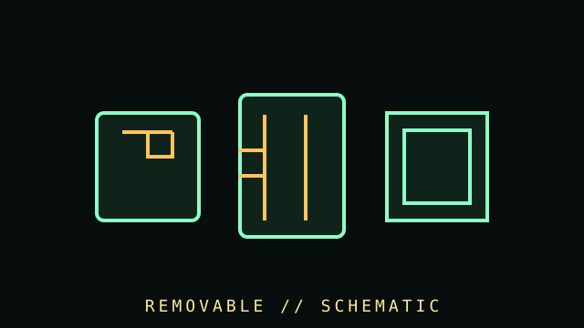

[ SUBCATEGORY DIRECTORY // 4 FILES // 191 MEDIA RECORDS ]
Browse removable media subcategories
Browse removable cartridges, tapes, flash drives and memory cards by individual model; drives/readers and media are identified separately.
Browse individually cataloged models with format, compatibility, preservation and source notes.
OPEN SUBCATEGORY FILE →SUBCATEGORY FILE // 30 MEDIA RECORDSCompactFlash, CFexpress and microdrivesBrowse individually cataloged models with format, compatibility, preservation and source notes.
OPEN SUBCATEGORY FILE →SUBCATEGORY FILE // 42 MEDIA RECORDSMagnetic and optical removable cartridgesBrowse individually cataloged models with format, compatibility, preservation and source notes.
OPEN SUBCATEGORY FILE →SUBCATEGORY FILE // 56 MEDIA RECORDSTape and optical cartridgesBrowse individually cataloged models with format, compatibility, preservation and source notes.
OPEN SUBCATEGORY FILE →[ COMPONENT RECORD // REMOVABLE STORAGE ]
Removable
media.
The 100 new records cover removable computer storage: model-specific cards, USB flash media, external SSD products, magnetic cartridges, and data tapes. Readers are identified separately; older catalog records remain unchanged. Capacity labels alone do not describe speed, endurance, authenticity, or long-term reliability.

NEW ADDITIONS: exactly 100 removable-storage product records, including ten external SSD product SKUs; readers are identified separately. Existing catalog records remain unchanged. Compatibility depends on the host, controller, protocol, capacity and format generation.
Reference specifications
| Interfaces | USB Type-A/Type-C, USB generations, SD/UHS/SD Express, CFexpress, CompactFlash, and external USB/Thunderbolt product interfaces. |
|---|---|
| Performance | Sequential ratings, random I/O, sustained writes, bus generation, reader capability, and workload endurance are separate measurements. |
| Formats | Filesystem, partition scheme, maximum supported capacity, allocation, and host compatibility matter; a card's capacity class does not guarantee reader support. |
| Reliability | Flash controller, NAND, wear management, counterfeit risk, temperature, write cycle, and safe-removal behavior vary by product. |
Handling & verification
- Buy from a trustworthy source, test advertised capacity with a full write/read verification, and retain purchase and model details.
- Back up important data before reformatting or using a media-repair utility. Flash wear or controller failure may make recovery impossible.
- Use safe eject where the operating system or write cache requires it; do not remove media during writes.
- For camera cards, match the camera's supported speed class, bus mode, capacity limit, and filesystem.
- For archive use, treat removable flash as transport, not a single-copy preservation medium; maintain checksummed copies elsewhere.
Sources & further reading
- SD Association — SD standards overviewOfficial card capacity, speed class, and bus family definitions.
- USB-IF — USB specificationsOfficial interface standards and document library.
- Library of Congress — Digital preservation formatsPreservation planning and media sustainability information.